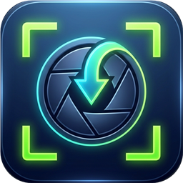
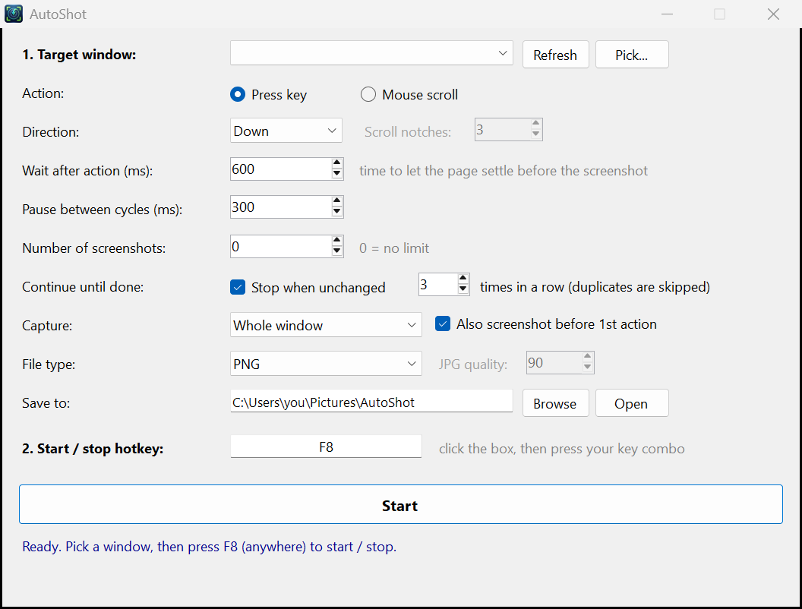
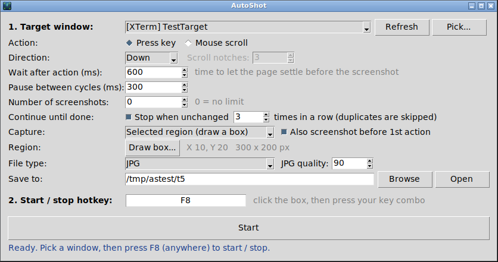

Key or scroll
Press Up, Down, Left, or Right, or scroll the mouse wheel by as many notches as you like.
Goza Labs · Desktop utility · v1.0.1
Automatic page-by-page screenshots. AutoShot presses an arrow key or scrolls a window for you, takes a screenshot after each step, and stops by itself when it reaches the end.

All versions, checksums, and release notes are on the releases page. Linux needs an X11 session (for example "Ubuntu on Xorg"); Wayland blocks the key presses and screenshots AutoShot relies on.
What it does
Made for long documents, e-book readers, slide decks, galleries, chat histories, and anything else you would otherwise flip through one screen at a time.
Press Up, Down, Left, or Right, or scroll the mouse wheel by as many notches as you like.
The whole window, just its content, the entire screen, or a box you draw with the mouse.
When the screen stops changing a few times in a row, AutoShot knows it reached the end, stops, and never saves duplicates.
PNG, JPG, BMP, TIFF, GIF, or PDF, either every page in one file or one PDF per shot.
A global start/stop hotkey you choose yourself (F8 by default), so you never have to leave the app you're capturing.
The Windows version is a single 300 KB file with no installer. Linux builds are self-contained, with nothing else to install.
Screenshots


How it works
Install
Extract the zip and open AutoShot.exe. If SmartScreen warns about an unrecognized app, choose More info → Run anyway.
Run ./autoshot from the extracted folder. Use ./install.sh to add AutoShot to your app menu.
tar -xzf AutoShot-linux-x86_64.tar.gz cd AutoShot-linux-x86_64 ./autoshot # run it ./install.sh # optional: add to your app menu